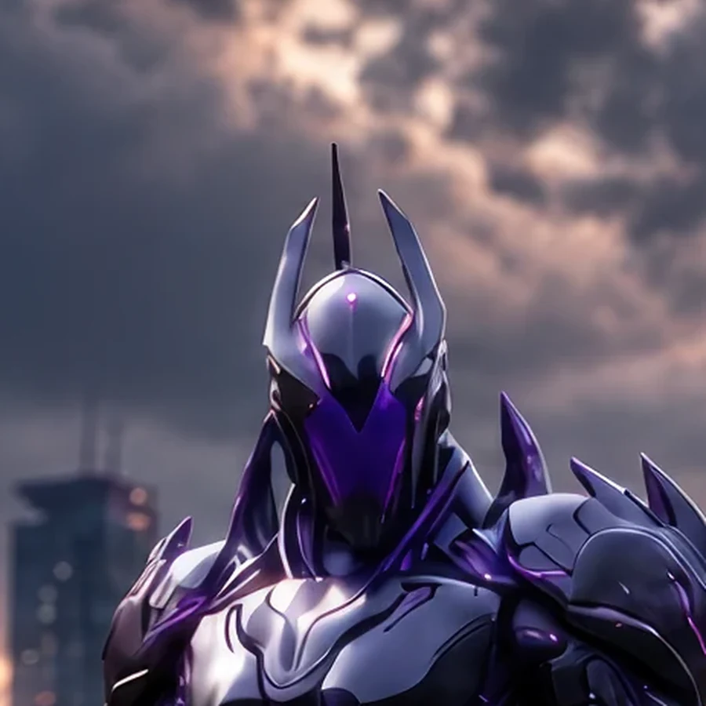
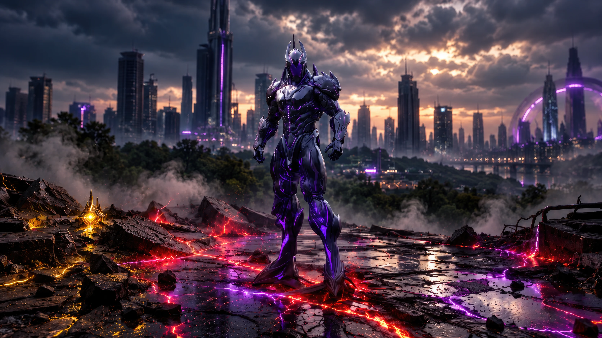
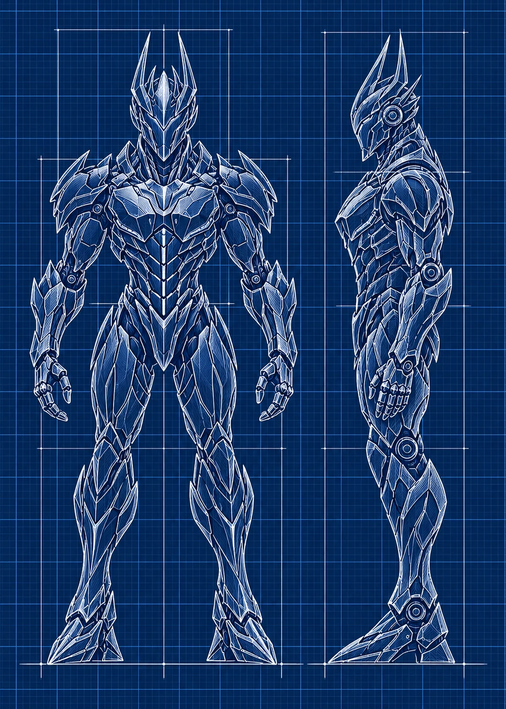

Field Observation
A golden core glows within dark wreckage well left of the hero.
 ©
©
GENEZYS ARCHIVE · EARTH 1 · Legionnaire
Glacial Chrono
Identity & combat record
Archive node 01 / 05

Archive record
Xylox remembers every fallen ally, and makes sure their enemies remember too. The Frozen Epoch marks a target and waits, patient as ice, for the moment a comrade falls. Then the Order's oldest promise is kept: no loss goes unanswered.
Combat signature
Needlethreads past protection: As soon as next ally dies, this marked enemy will suffer 120 damage and 100 pierce damage in following round.
Genezys 03:04 ™&©2026LEGIONS
Recovered visual record
Archive node 02 / 05

Full frame available // rotate device to landscape
Technical archive
Archive node 03 / 05

Classified field intelligence
Archive node 04 / 05
FIELD REPORT // ANOMALY REPORT
Field Observation
A golden core glows within dark wreckage well left of the hero.
Environment
Object Analysis
Key Findings
Motion archive
Archive node 05 / 05
Motion record not yet recovered